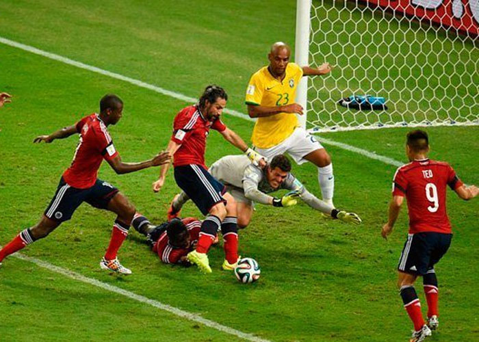

El Gol de Yepes
En el minuto final del partido, Mario Yepes empujó el balón al fondo de la red. Durante unos segundos, todo el país creyó que Colombia había empatado el partido.
El estadio celebró el gol durante varios segundos antes de que el árbitro lo anulara por fuera de lugar.

Pasa el mouse para ver contexto
Este momento se convirtió en uno de los más recordados del
fútbol colombiano por la emoción y la polémica que generó. Sin embargo, segundos después nos llega la gran frustración.